.text {
display: inline-block;
vertical-align: top;
}
Guttman Art Portfoilo
Guttman Art Portfoilo Gallery (2022)
The Arts in New York City:
What is Art? & Ways of Seeing Artifact!
Art is the expression or application of human creativity, and to me, it is that emotion of freedom that
takes the mind out of politics or controversial drama unless it's a narrative story, including exploring adventure or satirical social noir events
in other media such as books, movies/televisions, animations, video games, etc. It takes skill and imagination, typically in a visual form,
to appreciate primarily for their beauty or emotional power.
While I might agree with the Middle Ages men seeing hell as a firey place.
However, some people today may think or experience it as either in another dimension,
hell instead of underground earth, or just blackness of nothingness. Now with the photography,
I agree with the image as a reproduction piece of history in a time and place.
Photography can be based on someone's perspective, which goes for an image too,
and also tells the personality of the person. In general, in a way of seeing me,
there is more meaning in seeing and thinking than in the original intention of the subject matter.
Style Wars (1983)
In the film Style Wars is the defining of hip hop dancing, breaking, a graffiti artist.
They call themselves writers, but actually, they are really artists working across all forms
of spray-paint graffiti around the subway. The art around the city acknowledges these dissenting
sides without ceding to authority. Many think that the art they created is a sign of criminal offense,
such as pickpocketing and murder. Authorities say it “They’re all in the same area of destroying our
lifestyle and making it difficult to enjoy life,”.
In reality, this isn't about the authority vs the artist; it's about the artist and the bomber affecting the art of others.
It's Nice to see a city in the wasteland adding color to it, or otherwise it's just the greyness of an underwhelming city.
There were even names that were graffiti around the city in the sake of fame. It challenges society on the works of art, opening
a deeper meaning of how kids in the 80s feel when exploring their sense of freedom. Watching the film now, it felt like an original
story, and how I came to be of many incredible truths: that graffiti wasn’t a gateway to violence but an escape from it.
Art Terminology(Figure 1 - Left)
Mark Making as Language: A uniquely shaped Poké Ball
with elemental icons at each corner.(Figure 2 - Right)
Style: Realism, Impressionism, Expressionism, Surrealism, Japanese Style
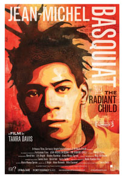
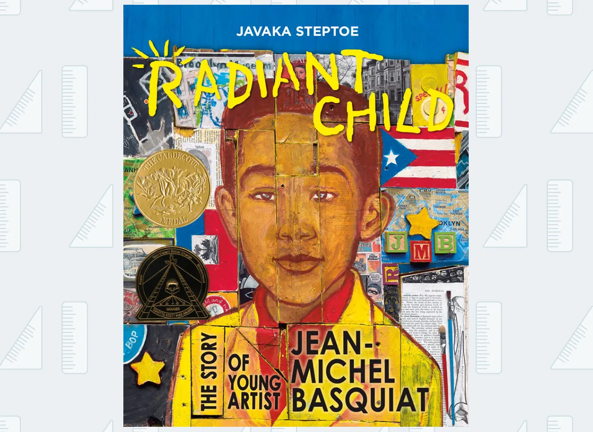
The Radiant Child (2010)
While watching the film "The Radiant Child," when compared to Style Wars talks about the life of an artist perspective when it comes to crimes,
drugs, or other shady activities. The interest in graffiti is common among young people as it was on walls and other transportation in both films,
taking place in the late 70s and early 80s in New York. Style Wars was a documentary, they see graffiti as a sign of writing and self-claim,
and get away from authorities, so-called writers showing how the kids felt when it comes to expression, and breakdancing. On the other hand,
Radiant Child is about Jean Michell Basquiat, a multilingual person that is unique among other people at the time. Jean is from a higher-class
area, who also enjoys graffiti, but also has family issues, and found love through art in the Manhattan club with his mentor, Andy Warhol.
However, there is a difference between the two films in that Jean, unlike the kids in Style Wars, did get fame, being well-known in the art world.
Jean's life isn't always happy. He had a mental issue with drugs, especially with the death of Andy Warhol's impact on his life situation. But he did
overcome the situation with the help of art inspiration and friends along the way, making Jean the most influential artist of all time. Both films'
artwork throughout their filmography is cartoony, abstract, vibrant, and varied, meaning their passion for the artwork they produced. But their stories
are dark, cynical, somber, and a swan song, yet beautiful characters in them that make you feel sympathetic for their tragedy, without them,
there wouldn't be any depth to the art world and its history.
Photo Images & Figures Descriptions
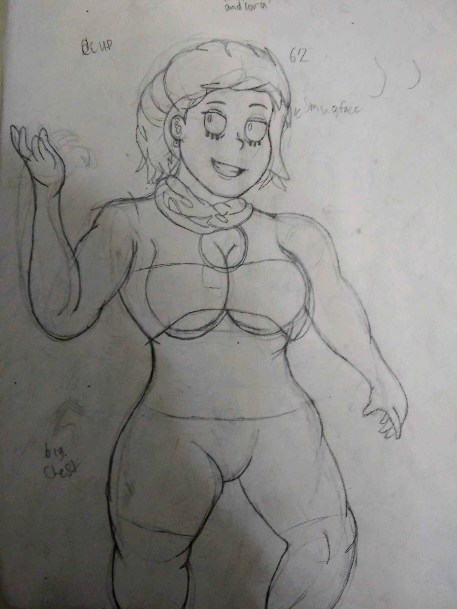
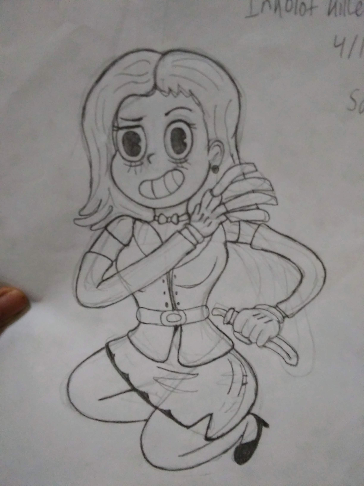
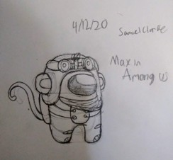
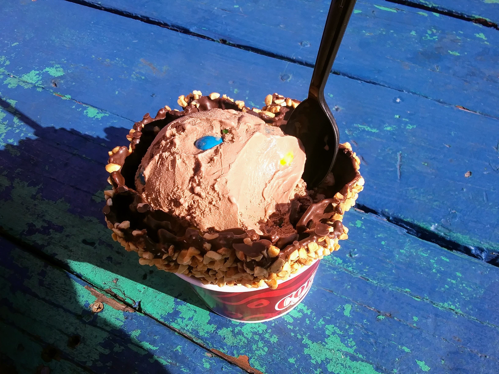
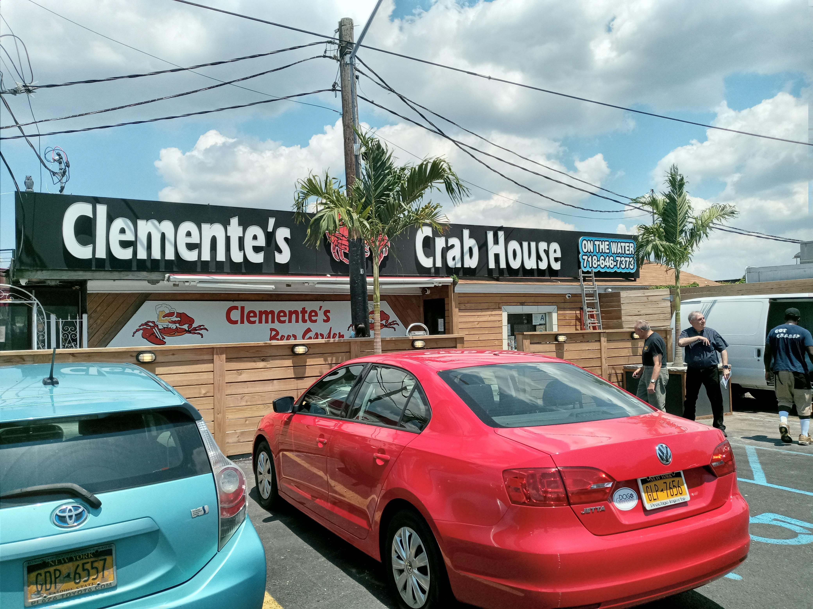
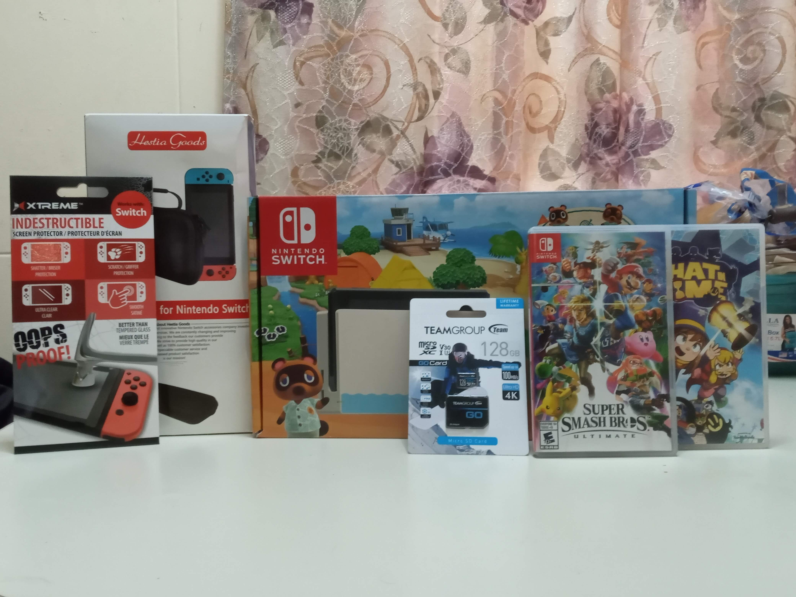
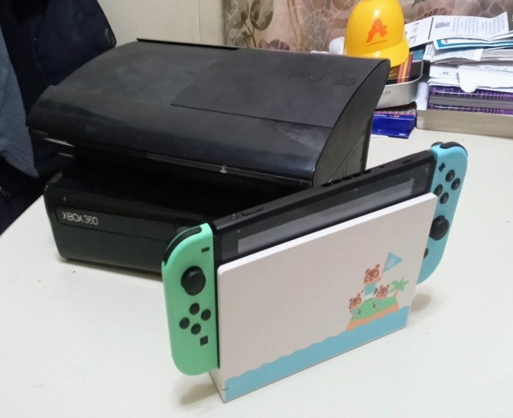
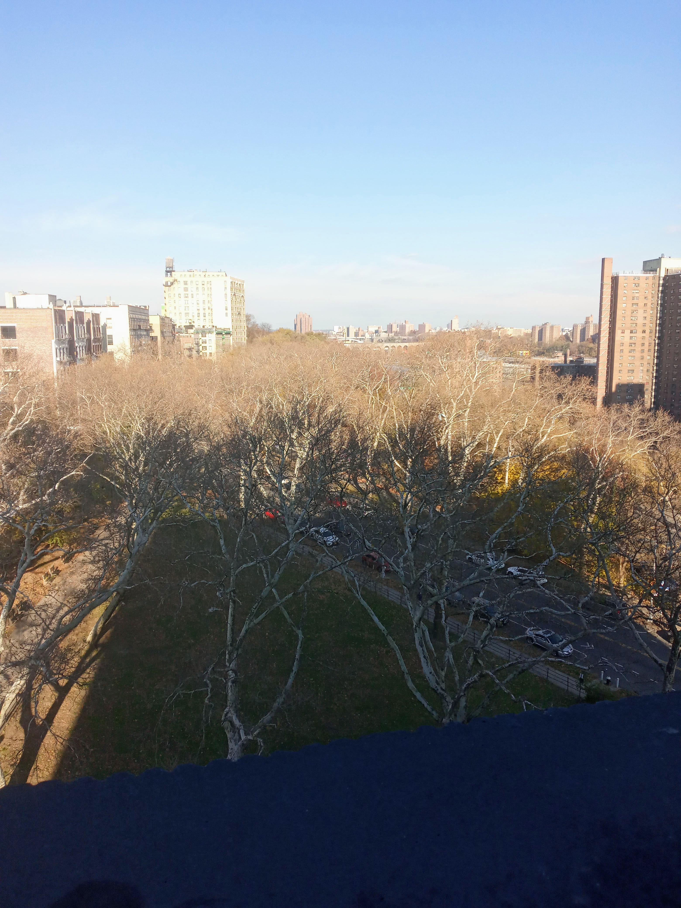
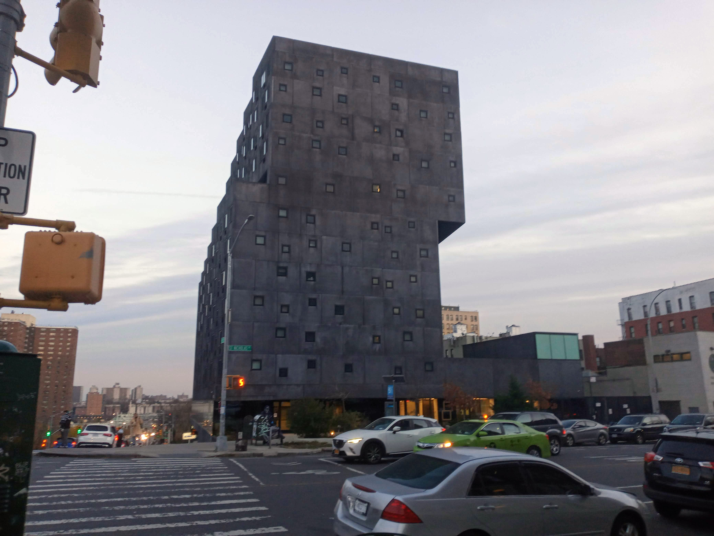
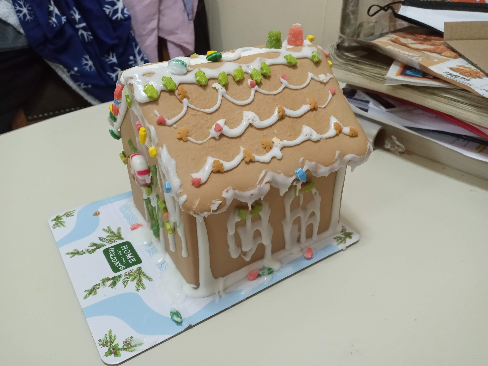
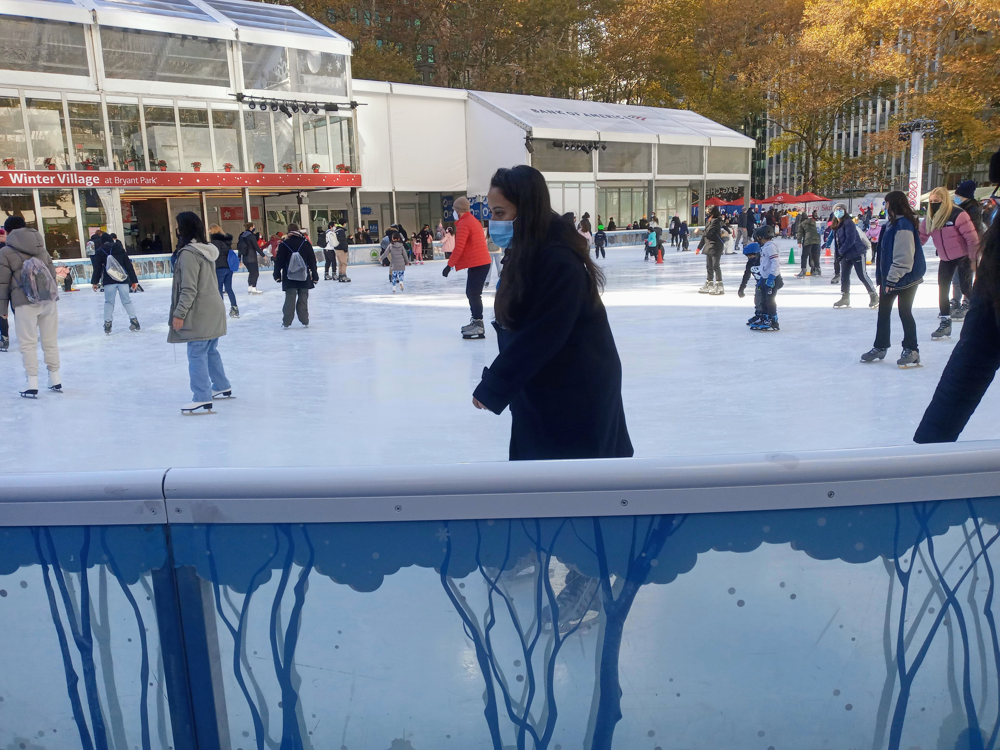
Figure 1-3:
These are examples of sketches from my sketchbook, most of which are original works. The drawing on the left appears unfinished,
but is complete in the context of the book, serving as proof that I hand-draw without tracing, though I use references to assist with sketching.
The character on the left is named Ethel Decker, while the right shows her depicted in an old cartoon style. At the bottom is a reference to Among Us.
Figure 3: When coming back home for a while, I wanted to get out and get some ice cream from Cold Stone for dessert.
Figure 4: I celebrated my high school graduation at Clement's Crab House in June and had a great time,
though this photo is from another day of the past.
Figure 6-7:
These are the game consoles I own: Nintendo Switch, PlayStation 3, and Xbox 360. I use them when I choose to play, and I have an equal preference
for all three. Some of the games I own include Super Smash Bros, A Hat in Time, Gears of War, Star Wars, Uncharted, and Jak and Daxter, among others.
Occasionally, these games influence my artwork. I took a picture of the consoles together to show appreciation without emphasizing competition between them.
Figure 8-9: On the opposite side of Manhattan, I visited 898 St. Nicholas Avenue to observe women of color whose distinctive hairstyles
reflected their individuality. The narratives they shared about overcoming adversity were compelling and deeply moving.
Figure 11: Recently, I visited Manhattan at 45th Street. In addition to spending time at the park, I also went ice skating.
Although I am not particularly skilled at this activity, I tried to enjoy the experience and personally covered the cost of skating.
Photography Changes Everything/Relationship with Photography
Throughout my life, the relationship with photography the used is sometimes not too much in the sake of social media but not too little with taking pictures
of interesting images. But I do love taking pictures of food to make sure that I won't forget those moments, or an image that I can remind myself of what
I'm supposed to do on those days. Even when it comes to memory, I take pictures when it comes to the best locations in New York when it comes to trips and
the things I've never seen before. Heck, if I hang out with my friend, he always wanted me to be a cameraman when it comes to videotaping stunts for his
video on social media, I might not be the best, but trying my best to make quality for his video. In high school, I took pictures of the art wall painted
through either my work for someone else, because it looked good, and inspired me for my future works.
When it comes to proof, I sketch out an artwork even before it is in detail to make sure I don't plagiarize other artists.
When using my phone to take a photo, it's not the best one in town, but I edit to make sure it looks decent when making a proper image.
Sometimes, when watching YouTube tech videos about smartphones, they always talk about how great the cameras are and how they improve each year,
including comparing them to a real camera and how realistic it gets. When I use a photo, I get a reference to make sure it is either accurate to
what to draw or compare to my memories to see how it made it different. The nostalgia hit my brain; my parent used a lot of photos to remember how
great the past was and how it impacted me growing up to be a better person.
Samuel's Museums & Artists
Collage Images
Figure 1 (Left): Collage using BeFunky Photo Editor Mario defends his ice cream from a creature inside a cabin set in hell,
created to make the landscape feel surreal and dynamic.
Figure 2 (Right):Personal Sketch Collage These hand-drawn sketches and photos are from high school,
showing me in different outfits. I’ve always felt connected to my drawings, most of which were done by hand.
All About Collages (Community College)
The motivation and Inspiration behind these two collage pieces was to distinguish one from the other.
The first one was my first time using a digital computer instead of making it by hand. I know that the collage is not perfect, but it's something.
I used to use the program Befunky to mishmash my style so the landscape wouldn't be boring. While my peer uses about themselves
(don't worry, I use that for my second collage). The first one was to unleased my creative motive to the limit of shifting to a normal
house setting and make a story about it as if it took place in another world. The first picture was about Such as Mario in The Cabin of hell
trying to protect his ice cream from an Evil Creature and where to escape. The inspiration for the first one was complex, but I was influenced
by other artists by using stock photos and combining them into one big piece. Now for the second one is not like the first one, but it's about
me and my drawing and sketches connect to me so much, and mostly by hand. I, as a person, am mundane; most of these old pictures are just me
in high school in different outfits of variations. I do have some struggles with having the best face, I just know that not everyone is not perfect.
I'm glad that I am flawed and appreciate who I am as a person. Without these sketches and artwork all over the years, I'm nothing, to be honest.